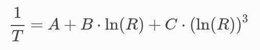
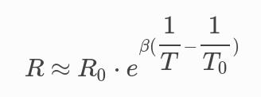
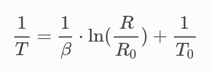

Capteur résistif - CTN (seconde générale)¶
Programme de seconde générale 2019 - Enseignement commun
Mesurer une grandeur physique à l’aide d’un capteur électrique résistif. Produire et utiliser une courbe d’étalonnage reliant la résistance d’un système avec une grandeur d’intérêt (température, pression, intensité lumineuse, etc.). Utiliser un dispositif avec microcontrôleur et capteur.
Principe¶
Un capteur résistif est un composant électronique dont la résistance varie en fonction de la grandeur physique à mesurer.
Par exemple, une CTN est un capteur résistif à coefficient de température négatif.
.png)
Courbe d’étalonnage d’une CTN 10k
Note
Pour 25°C la résistance mesurée est égale à 10 \({k\Omega}\) !
Pour une tension qui varie en fonction de la résistance donc de la température, la solution la plus simple est de placer la CTN dans un pont diviseur de tension.

En choisant la résistance \(R_0\) également à 10 \({k\Omega}\), la tension obtenue est partiellement linéarisée.

Entre 0 et 40°C, la température en fonction de la tension est donnée par la relation suivante :

Montage¶

Programme¶
/*
* Mesure d une température avec une CTN 10k (25°C)
* placée dans un pont diviseur de tension avec
* une résistance de 10k.
*/
float tension;
int temperature; // Arrondi à l entier
float a = -0.0441; // Coeff. directeur modèle
float b = 3.66; // Ordonnée à l origine modèle
void setup() {
Serial.begin(9600); // Paramétrage du port série
}
void loop() {
tension = analogRead(A0)*5.0/1023; // Lecture tension
temperature = (tension-b)/a; // Calcul température
Serial.print("U = "); // Affichage dans moniteur série
Serial.println(tension);
Serial.print("T= ");
Serial.println(temperature);
delay(1000); // Temporisation d une seconde
}
A retenir¶
Placer un capteur résistif (température, pression, lumière, …) dans un pont diviseur de tension reste une solution simple d’interfacage avec un microcontrôleur. Mais pas la plus efficace !
Allez plus loin¶
Mesurer la résistance de la CTN¶
Dans le pont diviseur de tension, la résistance de la CTN s’exprime par la relation suivante :

/*
* Mesure de la résistance d une CTN
*/
#define Vcc 5 // Tension d'alimentation
#define Ro 10000 // Résistance du pont
float u; // Tension CTN
float R; // Résistance CTN
void setup() {
Serial.begin(9600); // Paramétrage du port série
}
void loop() {
u = analogRead(A0)*5.0/1023; // Lecture tension
R = Ro * u/(Vcc-u); // Calcul de la résistance
Serial.print("U = "); // Début affichage
Serial.println(u);
Serial.print("R = ");
Serial.println(R); // Fin affichage
delay(1000); // Temporisation en milli seconde
}
Mesure de la température avec la relation de Steinhart-Hart¶
Sur une grande plage de variation , la relation entre la température (en K) et la résistance de la CTN est :
{kind=link}
A, B et C sont les coefficients de Steinhart-Hart. Ils sont donnés par le constructeur ou peuvent se déterminer expérimentalement à partir de trois points de mesure.
Note
Un programme Python pour déterminer ces trois coefficients est disponible sur Wikipédia (https://fr.wikipedia.org/wiki/Relation_de_Steinhart-Hart).
/*
* Mesure de la température avec la relation de Steinhart-Hart
*/
#define Vcc 5 // Tension d'alimentation
#define Ro 10000 // Résistance du pont
#define A 1.0832e-3
#define B 2.1723e-4
#define C 3.2770e-7
float u; // Tension CTN
float R; // Résistance CTN
float logR;
float T;
void setup() {
Serial.begin(9600); // Paramétrage du port série
}
void loop() {
u = analogRead(A0)*5.0/1023; // Lecture tension
R = Ro * u/(Vcc-u); // Calcul de la résistance
logR = log(R); // Calcul de ln(R)
T = (1.0 / (A + B*logR + C*logR*logR*logR)); // Calcul de la température
T = T - 273.15; // Conversion en °C
Serial.print("R = "); // Début affichage
Serial.println(R);
Serial.print("T = ");
Serial.println(T); // Fin affichage
delay(1000); // Temporisation en mille seconde
}
Simplification de relation de Steinhart-Hart¶
Sur une plage de variation plus réduite de la température, la relation de Steinhart-Hart permet d’écrire :
{kind=link}
- \({R_0}\) est la valeur de la résistance pour la température \({T_0}\).
- \({\beta}\) (en K) est coefficient de température.
_modele.png)
La détermination de la température (en K) s’effectue à l’aide de la relation suivante :
{kind=link}